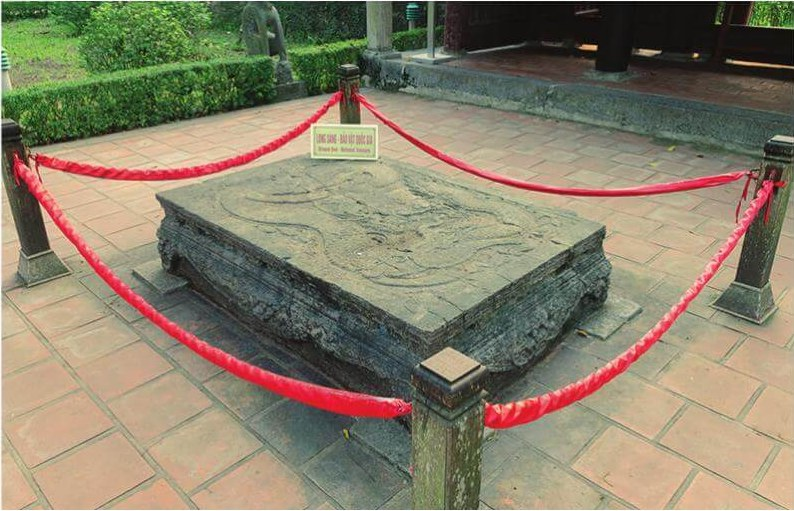

CỐ ĐÔ HOA LƯ
외의문 근처의 용상

이 용상은 2017년 국무총리의 서명 결정으로 국보로 인정받았습니다.
이곳의 용상은 왕의 침대가 아니라 제물을 준비하거나 진설하는 기능의 제사 도구입니다. 용상은 호랑이 다리 모양의 굽은 다리에 물고기 배 모양의 부조(chân quỳ dạ cá) 양식으로 조각되어, 견고하고 웅장하면서도 유려함을 잃지 않습니다. 가장 돋보이는 예술적 포인트는 용상의 윗면에 집중되어 있는데, 장인은 이곳에 정교하고 위엄 있는 선으로 거대한 신령한 용의 모습을 양각해 놓았습니다.
이 보물을 유례없이 독창적인 것으로 만드는 것은 바로 민간 장인의 파격적인 창의성입니다. 전통적이고 날카로운 형태의 용 발톱 외에도, 옛 장인은 일부 용 발톱을 사람의 손 모양으로 교묘하게 변형시켰습니다. 용의 신성한 권위와 사람의 친근함 사이의 정교한 결합은 돌에 영혼을 불어넣어 철학과 미학의 자취가 짙게 밴 예술 작품을 탄생시켰습니다.

딘 왕 사당 외의문(Nghi môn ngoại)에 위치한 돌 용상은 독특한 제사 유물일 뿐만 아니라 베트남 전통 석조 조각 예술의 정점입니다. 이 보물을 바라보며 우리는 옛 조각 장인들의 솜씨에 더욱 감탄하게 되며, 동시에 자랑스러운 민족의 문화유산에 대한 자부심을 더하게 됩니다.